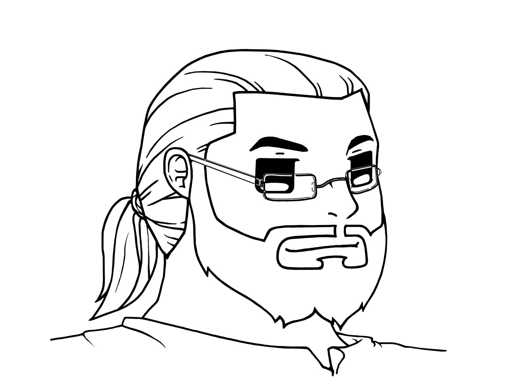
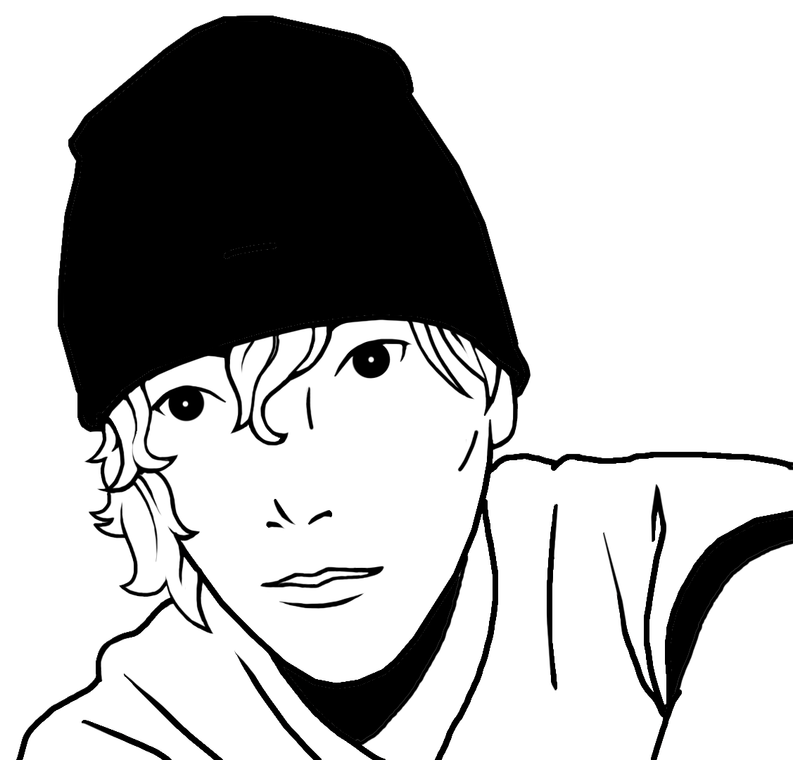
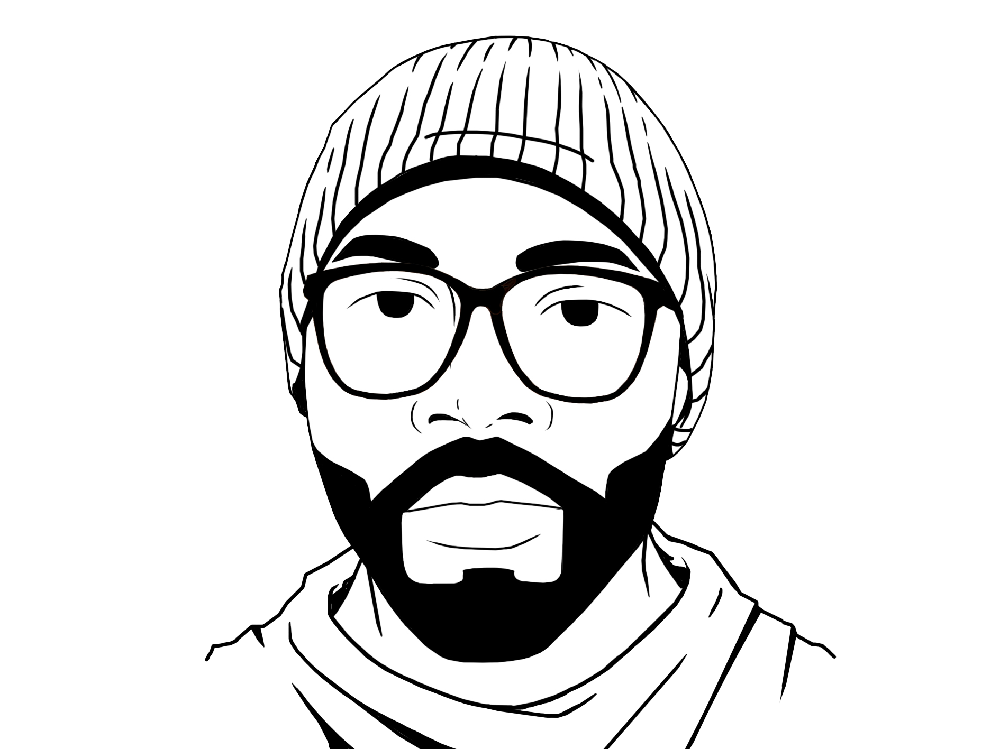

If you can see this page, you've been expressly directed here because we believe in what you can be. So much so, that we brought you into this team to develop and/or further that potential. This is where the party starts and we're happy to have you on board.
With that in mind, it is in the best interests of everyone involved that we all be on the same page about where we are as a company and what we expect from you.
Project PBR began as a guild in Tera, a ranked team in League of Legends, a group of friends who lived in South Auckland, New Zealand. Back then it was just called Pork Buns and Rice, for no better reason than this was a group of friends from different nationalities and cultures.
I came along in the year of 2014 having met the other founders of Project PBR through our Bachelor of Arts Degree in Creative Writing at Manukau Institute of Technology (MIT). There I shared my fierce love of haiku and video games, I was heart warmed to find like minded people there. A year later in October I was approached over Teamspeak and asked if I'd like to help create a company. Suffice it to say, I said; 'I do' and was married to the dream of a company that was meant to enable us to make money by video gaming.
We began with the utmost sincerity and enthusiasm, we had established a Facebook Page and Twitter Account within the first two days. Plans for logos were made and people were organised into their roles. We had a CEO, an Executive Producer, an Art Director and a Stream Manager. I began market research and writing our business plan. For a few months, things seemed to be going great, we had a few Youtube videos under our sleeves, a few hours of stream VOD's.
I began my 'Community Support' strategy in earnest during 2016. The first streamer I had managed to really connect with had redoubled my belief in my mission to build this company. As time went by, I was introduced to a few new streamers and slowly but surely a community began to grow.
Things weren't going as well as I had hoped, none of the work I had done had made any profit whatsoever, my dreams and our goals were in jeopardy. With nowhere else to turn I looked to a trusted friend and mentor who had done a lot for myself already. With his help we brought someone new into the fold and began Project Spite. A second wave initiative to recoup our strengths, examine our weaknesses and provide a plan to move forward.
In April 2017, as if from the ashes of a phoenix, Project PBR rose again with a new initiative: Project Spite. In service to the goals of that project, new leadership was chosen to pave the way for what Project PBR would become.
The heads of that project are:
Beyond that.. is you: the person we have adopted. At this time, that likely means you are a streamer and you've reached a point in your streaming career where relationships are necessary; every soon-to-be-hero has that point.
Character choices here are relatively straightforward in D&D, but require some level of thinking. Same applies here. Here's the basics:
Welcome. We're cheering for you.
  